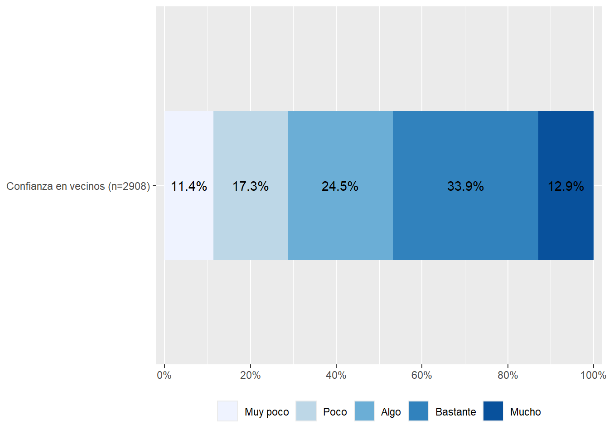
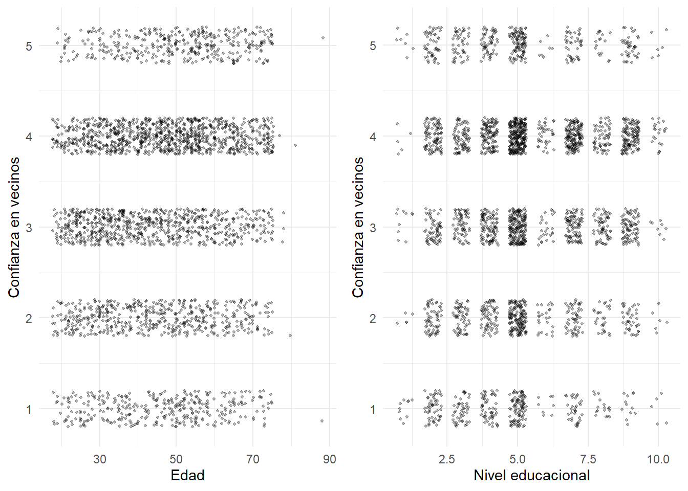
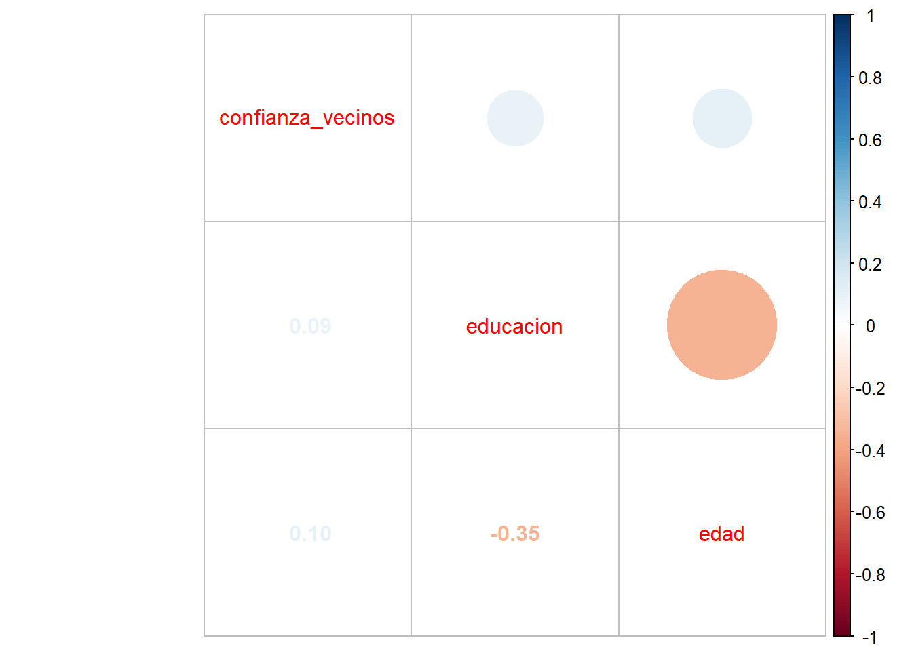
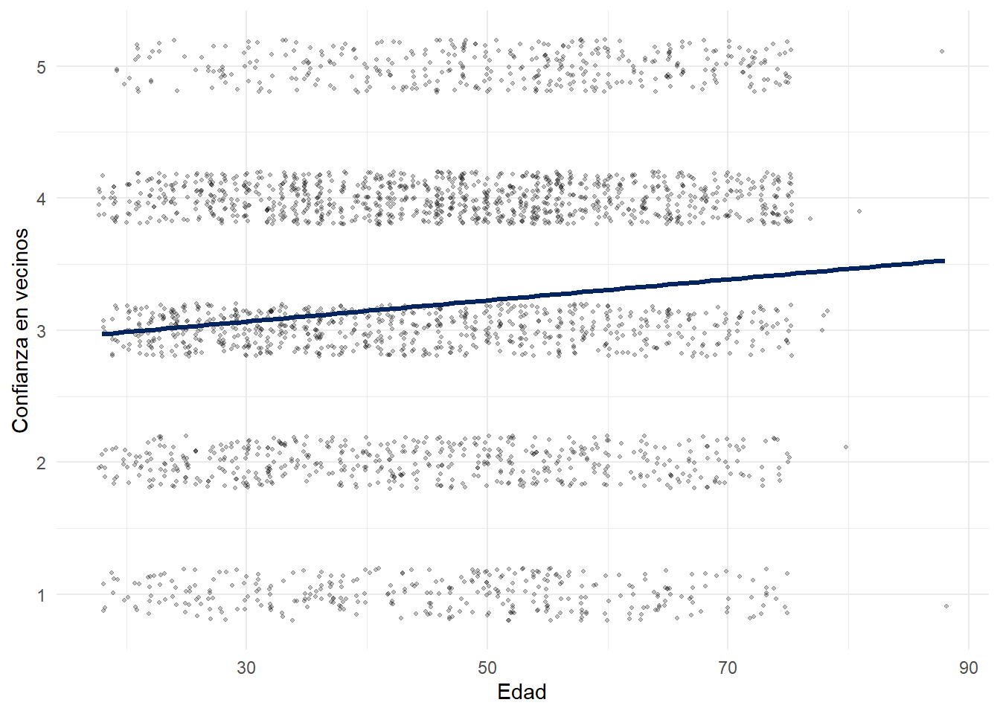
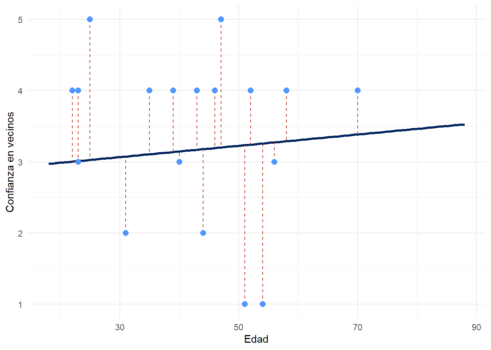

getwd() # muestra la carpeta de trabajo actualPráctico 01. Datos, variables y asociación
Métodos estadísticos para Ciencias Sociales III
1 Presentación
1.1 Objetivo de la práctica
Esta guía retoma los contenidos de la primera sesión y los lleva a R. Al terminar, usted debería ser capaz de:
- Retomar el manejo básico de R y RStudio: objetos, funciones, paquetes y bases de datos
- Cargar una base de datos y reconocer su estructura de casos y variables
- Identificar la escala de medición de una variable y sus consecuencias para el análisis
- Procesar variables: casos perdidos, nombres y etiquetas
- Describir variables y examinar la asociación entre ellas mediante gráficos de dispersión y correlaciones
- Trazar una primera recta de regresión y comprender qué son los valores predichos y los residuos
Al ser el primer taller del curso, comenzaremos con un repaso de los elementos básicos de R. Si usted ya los maneja con soltura, puede avanzar directamente a la sección de preparación del análisis.
La estimación de los coeficientes y su interpretación formal se abordarán en la próxima sesión teórica; aquí trabajaremos la intuición gráfica y computacional.
1.2 Antecedentes de los datos a utilizar
Utilizaremos la base del Estudio Longitudinal Social de Chile (ELSOC), del Centro de Estudios de Conflicto y Cohesión Social (COES). Trabajaremos con la primera ola (2016) y con la variable confianza en vecinos como variable dependiente de interés.
2 Repaso: trabajar en R
2.1 R y RStudio
Conviene distinguir dos cosas que suelen confundirse:
- R es el lenguaje de programación y el motor que ejecuta los cálculos
- RStudio es el entorno de trabajo (o IDE) desde el cual escribimos y ejecutamos código en R
RStudio organiza la pantalla en cuatro paneles: el editor (donde se escribe el script), la consola (donde se ejecutan las instrucciones y aparecen los resultados), el environment (los objetos disponibles en memoria) y un cuarto panel con archivos, gráficos, paquetes y ayuda.
Una recomendación desde el inicio del curso: escriba siempre su código en un script o en un documento Quarto, nunca directamente en la consola. Lo que se escribe en la consola se pierde; lo que está en un script puede volver a ejecutarse, corregirse y compartirse. Esa es la base de un trabajo reproducible.
2.2 Proyectos y rutas
Antes de comenzar a trabajar, cree un proyecto de RStudio (File > New Project) para el curso. Un proyecto fija la carpeta de trabajo, lo que permite usar rutas relativas del tipo datos/elsoc.RData en lugar de rutas absolutas como C:/Users/kevin/Documentos/curso/datos/elsoc.RData, que solo funcionan en su computador.
Para saber en qué carpeta está trabajando:
2.3 Objetos y asignación
En R, casi todo es un objeto. Los objetos se crean con el operador de asignación <-:
edad_ejemplo <- 34
edad_ejemplo[1] 34El nombre del objeto queda guardado en el environment y puede ser utilizado luego en otras operaciones:
edad_ejemplo + 10[1] 44Note que la operación anterior no modifica el objeto: para que el resultado quede guardado, hay que asignarlo nuevamente.
edad_ejemplo <- edad_ejemplo + 10
edad_ejemplo[1] 442.4 Tipos de datos
R distingue distintos tipos de datos, y esa distinción se relaciona directamente con las escalas de medición que revisamos en clases:
numero <- 25.5 # numeric: variables continuas (edad, ingreso)
texto <- "Santiago" # character: texto
logico <- TRUE # logical: verdadero o falso
categoria <- factor("Mujer", levels = c("Hombre", "Mujer")) # factor: variables categóricas
class(numero)[1] "numeric"class(texto)[1] "character"class(logico)[1] "logical"class(categoria)[1] "factor"La función class() es una de las que más utilizará: antes de analizar una variable, conviene siempre verificar de qué tipo es. Un error frecuente consiste en tratar como numérica una variable que en realidad es categórica, obteniendo resultados que no tienen sentido sustantivo (por ejemplo, el “promedio” de la nacionalidad).
2.5 Vectores y bases de datos
Un vector es una secuencia de valores del mismo tipo, y se construye con la función c():
edades <- c(23, 45, 31, 62, 28)
edades[1] 23 45 31 62 28Podemos aplicarle funciones:
mean(edades) # promedio[1] 37.8length(edades) # cantidad de elementos[1] 5Una base de datos (data.frame) es un conjunto de vectores de igual largo dispuestos como columnas. Es exactamente la estructura rectangular que vimos en clases: filas como casos y columnas como variables.
ejemplo <- data.frame(
edad = c(23, 45, 31, 62, 28),
sexo = c("Mujer", "Hombre", "Mujer", "Hombre", "Mujer")
)
ejemplo edad sexo
1 23 Mujer
2 45 Hombre
3 31 Mujer
4 62 Hombre
5 28 MujerPara acceder a una columna específica usamos el signo $:
ejemplo$edad[1] 23 45 31 62 28mean(ejemplo$edad)[1] 37.8Y para explorar rápidamente una base:
dim(ejemplo) # número de filas y columnas[1] 5 2names(ejemplo) # nombres de las variables[1] "edad" "sexo"head(ejemplo) # primeras filas edad sexo
1 23 Mujer
2 45 Hombre
3 31 Mujer
4 62 Hombre
5 28 Mujer2.6 Funciones y ayuda
Una función recibe argumentos y devuelve un resultado. En mean(edades), mean es la función y edades el argumento. Muchas funciones tienen argumentos adicionales con valores por defecto:
edades_na <- c(23, 45, NA, 62, 28)
mean(edades_na) # devuelve NA[1] NAmean(edades_na, na.rm = TRUE) # excluye los casos perdidos[1] 39.5El resultado NA del primer caso no es un error del programa: R está avisando que hay valores perdidos y que, por lo tanto, no puede calcular el promedio sin una instrucción explícita de qué hacer con ellos.
Para consultar la documentación de cualquier función:
?mean
help(mean)2.7 Paquetes
Las funciones vienen agrupadas en paquetes. Los paquetes se instalan una sola vez y se cargan en cada sesión de trabajo:
install.packages("dplyr") # instalar (una vez)
library(dplyr) # cargar (en cada sesión)En este curso utilizaremos pacman, que instala el paquete si falta y lo carga si ya está disponible, en una sola instrucción:
install.packages("pacman") # solo la primera vez
pacman::p_load(dplyr, ggplot2)La notación pacman::p_load indica que usamos la función p_load del paquete pacman. Es una forma de precisar de dónde viene una función, útil cuando dos paquetes tienen funciones con el mismo nombre.
2.8 El operador pipe
El operador %>% (del paquete dplyr) encadena operaciones: toma el resultado de la izquierda y lo entrega como primer argumento de la función de la derecha. Estas dos instrucciones son equivalentes:
mean(ejemplo$edad)
ejemplo$edad %>% mean()Su utilidad se aprecia cuando encadenamos varios pasos, ya que evita anidar funciones dentro de funciones y permite leer el código en el orden en que ocurren las operaciones.
2.9 Errores frecuentes
Al comenzar, la mayoría de los mensajes de error tienen alguna de estas causas:
could not find function: el paquete no está cargadoobject not found: el objeto no existe, o su nombre está mal escrito (R distingue mayúsculas de minúsculas)- Un
+en la consola: quedó un paréntesis o una comilla sin cerrar. PresioneEscy revise la línea
Los mensajes de error no son un problema, sino información. Conviene leerlos con calma antes de volver a ejecutar el código.
2.10 Sobre el uso de inteligencia artificial
En este curso está permitido el uso de herramientas de inteligencia artificial generativa para apoyar el trabajo con R. La condición es una sola, y es exigente: usted debe ser capaz de explicar qué hace cada línea del código que entrega. Si no puede hacerlo, ese código no le sirve, aunque produzca el resultado correcto.
La razón es que el objetivo del curso no es obtener una tabla de regresión, sino comprender qué representa. Un modelo mal especificado, una variable ordinal tratada como continua sin advertirlo o una recodificación que elimina silenciosamente la mitad de la muestra producen resultados que se ven perfectamente razonables. Detectar esos problemas exige entender el procedimiento, y ninguna herramienta lo hace por usted.
Dónde estas herramientas ayudan
- Explicar un mensaje de error que no se comprende
- Aclarar qué hace una función determinada o para qué sirve un argumento
- Sugerir alternativas cuando ya se tiene una idea del procedimiento pero no de la sintaxis
- Comentar y documentar código propio
- Detectar errores de escritura, como paréntesis o comillas sin cerrar
Dónde conviene desconfiar
- Con frecuencia proponen funciones o argumentos que no existen o que corresponden a versiones antiguas de un paquete
- El código puede ejecutarse sin errores y aun así responder a una pregunta distinta de la que usted formuló
- Tienden a producir soluciones plausibles antes que correctas: si el planteamiento del problema es ambiguo, la respuesta lo será también, pero con apariencia de certeza
- No conocen sus datos. Desconocen el libro de códigos, la escala de cada variable y los valores que representan casos perdidos
Un ejemplo concreto de esto último. Ante la instrucción “calcula la matriz de correlaciones de mi base de datos”, una respuesta habitual sería:
cor(proc_data, use = "complete.obs")El código se ejecuta y entrega números. Sin embargo, incluye la variable sexo, que es nominal, y la correlación de Pearson no es apropiada para ese tipo de variable. El resultado existe, pero no significa nada. Reconocer ese problema no depende de saber programar, sino de haber comprendido las escalas de medición.
Una reflexión sobre el aprendizaje
Existe una diferencia relevante entre resolver un problema y observar cómo alguien lo resuelve. Cuando el código aparece ya escrito, se produce una sensación de comprensión que no siempre corresponde a un aprendizaje efectivo: el procedimiento resulta claro mientras se lee y se vuelve inaccesible al momento de reproducirlo sin ayuda. La dificultad de equivocarse, revisar la documentación y volver a intentarlo es parte de lo que hace que un procedimiento quede disponible después.
Conviene además considerar que las evaluaciones escritas del curso exigen interpretar resultados y coeficientes sin computador.
Una forma razonable de trabajar
- Intente primero por su cuenta, aunque el resultado sea incompleto
- Si recurre a una herramienta de inteligencia artificial, solicite una explicación antes que una solución
- Ejecute el código por partes y observe qué produce cada una
- Verifique el resultado con lo que ya conoce de sus datos: ¿el número de casos es el esperado?, ¿los valores están dentro del rango posible?
- Reescriba el código con sus propias palabras en los comentarios. Si no logra comentarlo, todavía no lo comprende
3 Preparación del análisis
3.1 Librerías a utilizar
pacman::p_load(dplyr,
haven,
sjmisc,
sjPlot,
sjlabelled,
kableExtra,
corrplot,
ggplot2,
ggpubr)3.2 Ajustar el espacio de trabajo
Previo a la carga de la base de datos, se recomienda ejecutar los siguientes comandos:
rm(list = ls()) # borrar todos los objetos en el espacio de trabajo
options(scipen = 999) # valores sin notación científicaLa función rm(list=ls()) permite comenzar con un espacio de trabajo (environment) vacío y sin otros objetos. A su vez, options(scipen=999) desactiva la notación científica, es decir, veremos los valores numéricos con todos sus decimales.
3.3 Cargar la base de datos
# Cargamos la base de datos desde internet
load(url("https://dataverse.harvard.edu/api/access/datafile/7245118"))Realizamos un chequeo básico de la lectura de datos: nombres de las variables y tamaño de la base en términos de casos y variables.
dim(elsoc_long_2016_2022.2) # dimensión de la base[1] 18035 750Recordemos lo visto en clases: una base de datos tiene forma rectangular. Cada fila es un caso o unidad de análisis (aquí, una persona encuestada en un año determinado) y cada columna es una variable.
4 Datos y variables
4.1 Selección de variables
Este paso consiste en crear un subconjunto reducido de datos que contenga solo las variables de interés. Para ello lo más fácil es revisar el libro de códigos de la base. Además filtramos por la ola 1 para trabajar solo con datos de 2016.
proc_data <- elsoc_long_2016_2022.2 %>%
filter(ola == "1") %>%
select(t01, # Confianza en vecinos
m01, # Nivel educacional
m0_sexo, # Sexo
m0_edad) # Edad
# Comprobar
names(proc_data)[1] "t01" "m01" "m0_sexo" "m0_edad"Mediante el comando get_label obtenemos el atributo label de las variables.
sjlabelled::get_label(proc_data) t01 m01
"Cuanto confia usted en sus vecinos" "Nivel educacional"
m0_sexo m0_edad
"Sexo del entrevistado" "Edad del entrevistado" Podemos ver que las etiquetas son largas o tienen códigos poco informativos, por lo que es necesario cambiarlas por otras más cortas y de fácil identificación.
4.2 Escalas de medición
En la primera sesión revisamos la clasificación NOIR: nominal, ordinal, intervalar y de razón. Esa distinción no es una formalidad: determina qué descriptivos tienen sentido y qué técnicas de análisis son apropiadas.
Antes de analizar, conviene preguntarse por la escala de cada variable:
escalas <- data.frame(
Variable = c("t01", "m01", "m0_sexo", "m0_edad"),
Contenido = c("Confianza en vecinos", "Nivel educacional", "Sexo", "Edad"),
Escala = c("Ordinal (5 categorías)", "Ordinal (10 categorías)",
"Nominal (dicotómica)", "Razón"),
Tratamiento = c("Se tratará como continua", "Se tratará como continua",
"Categórica (factor)", "Continua")
)
kable(escalas, "markdown")| Variable | Contenido | Escala | Tratamiento |
|---|---|---|---|
| t01 | Confianza en vecinos | Ordinal (5 categorías) | Se tratará como continua |
| m01 | Nivel educacional | Ordinal (10 categorías) | Se tratará como continua |
| m0_sexo | Sexo | Nominal (dicotómica) | Categórica (factor) |
| m0_edad | Edad | Razón | Continua |
Una advertencia importante: la confianza en vecinos y el nivel educacional son variables ordinales, y aquí las trataremos como si fueran continuas. Es una práctica frecuente en investigación social cuando la variable tiene suficientes categorías ordenadas, pero es una simplificación: supone que la distancia entre las categorías 1 y 2 es la misma que entre 4 y 5, lo que no necesariamente es cierto. Conviene tenerlo presente al momento de interpretar los resultados.
R también tiene su propia clasificación de tipos de datos, que no coincide exactamente con NOIR:
class(proc_data$t01)[1] "numeric"class(proc_data$m0_edad)[1] "numeric"4.3 Procesamiento de variables
Para el procesamiento de cada variable seguiremos el siguiente flujo de trabajo:
- Descriptivo general
- Recodificación: de casos perdidos y otros valores (en caso necesario)
- Etiquetado: cambio de nombres de variables y valores (en caso necesario)
- Otros ajustes
Se recomienda también un descriptivo final para revisar que el procesamiento de cada variable esté correcto.
4.3.1 Confianza en vecinos
a. Descriptivo
Para los descriptivos utilizaremos la función frq, de la librería sjmisc:
frq(proc_data$t01)Cuanto confia usted en sus vecinos (x) <numeric>
# total N=2927 valid N=2927 mean=-2.78 sd=74.04
Value | Label | N | Raw % | Valid % | Cum. %
------------------------------------------------------------------------------
-999 | No Responde | 5 | 0.17 | 0.17 | 0.17
-888 | No Sabe | 14 | 0.48 | 0.48 | 0.65
-777 | Valor perdido por error tecnico | 0 | 0.00 | 0.00 | 0.65
-666 | Valor perdido por encuesta incompleta | 0 | 0.00 | 0.00 | 0.65
1 | Muy poco | 332 | 11.34 | 11.34 | 11.99
2 | Poco | 502 | 17.15 | 17.15 | 29.14
3 | Algo | 713 | 24.36 | 24.36 | 53.50
4 | Bastante | 987 | 33.72 | 33.72 | 87.22
5 | Mucho | 374 | 12.78 | 12.78 | 100.00
<NA> | <NA> | 0 | 0.00 | <NA> | <NA>En esta variable vemos valores asociados a las opciones “No contesta” (-999) y “No sabe” (-888), además de (-777) y (-666), que corresponde definir como casos perdidos (en R, valores NA). El resto de los valores y etiquetas se encuentran en un orden correcto.
b. Recodificación
Después de revisar el libro de códigos, no hay variables en que los valores negativos representen alguna otra característica, así que podemos usar set_na:
proc_data <- proc_data %>% set_na(., na = c(-999, -888, -777, -666))frq(proc_data$t01)Cuanto confia usted en sus vecinos (x) <numeric>
# total N=2927 valid N=2908 mean=3.20 sd=1.20
Value | Label | N | Raw % | Valid % | Cum. %
-------------------------------------------------
1 | Muy poco | 332 | 11.34 | 11.42 | 11.42
2 | Poco | 502 | 17.15 | 17.26 | 28.68
3 | Algo | 713 | 24.36 | 24.52 | 53.20
4 | Bastante | 987 | 33.72 | 33.94 | 87.14
5 | Mucho | 374 | 12.78 | 12.86 | 100.00
<NA> | <NA> | 19 | 0.65 | <NA> | <NA>c. Etiquetado
Vamos a dar un nombre más sustantivo a las variables con la función rename, de la librería dplyr:
proc_data <- proc_data %>%
rename("confianza_vecinos" = t01,
"educacion" = m01,
"sexo" = m0_sexo,
"edad" = m0_edad)Además de cambiar el nombre, queremos cambiar las etiquetas de las variables:
proc_data$confianza_vecinos <- set_label(x = proc_data$confianza_vecinos,
label = "Confianza en vecinos")
proc_data$educacion <- set_label(x = proc_data$educacion,
label = "Nivel educacional")
proc_data$sexo <- set_label(x = proc_data$sexo, label = "Sexo")
proc_data$edad <- set_label(x = proc_data$edad, label = "Edad")
get_label(proc_data) confianza_vecinos educacion sexo
"Confianza en vecinos" "Nivel educacional" "Sexo"
edad
"Edad" d. Revisión final
frq(proc_data$confianza_vecinos)Confianza en vecinos (x) <numeric>
# total N=2927 valid N=2908 mean=3.20 sd=1.20
Value | Label | N | Raw % | Valid % | Cum. %
-------------------------------------------------
1 | Muy poco | 332 | 11.34 | 11.42 | 11.42
2 | Poco | 502 | 17.15 | 17.26 | 28.68
3 | Algo | 713 | 24.36 | 24.52 | 53.20
4 | Bastante | 987 | 33.72 | 33.94 | 87.14
5 | Mucho | 374 | 12.78 | 12.86 | 100.00
<NA> | <NA> | 19 | 0.65 | <NA> | <NA>4.3.2 Educación, sexo y edad
frq(proc_data$educacion)Nivel educacional (x) <numeric>
# total N=2927 valid N=2925 mean=5.26 sd=2.20
Value | Label | N | Raw % | Valid % | Cum. %
------------------------------------------------------------------------------------
1 | Sin estudios | 37 | 1.26 | 1.26 | 1.26
2 | Educacion Basica o Preparatoria incompleta | 322 | 11.00 | 11.01 | 12.27
3 | Educacion Basica o Preparatoria completa | 297 | 10.15 | 10.15 | 22.43
4 | Educacion Media o Humanidades incompleta | 394 | 13.46 | 13.47 | 35.90
5 | Educacion Media o Humanidades completa | 857 | 29.28 | 29.30 | 65.20
6 | Tecnica Superior incompleta | 102 | 3.48 | 3.49 | 68.68
7 | Tecnica Superior completa | 381 | 13.02 | 13.03 | 81.71
8 | Universitaria incompleta | 186 | 6.35 | 6.36 | 88.07
9 | Universitaria completa | 303 | 10.35 | 10.36 | 98.43
10 | Estudios de posgrado (magister o doctorado) | 46 | 1.57 | 1.57 | 100.00
<NA> | <NA> | 2 | 0.07 | <NA> | <NA>frq(proc_data$sexo)Sexo (x) <numeric>
# total N=2927 valid N=2927 mean=1.60 sd=0.49
Value | Label | N | Raw % | Valid % | Cum. %
------------------------------------------------
1 | Hombre | 1163 | 39.73 | 39.73 | 39.73
2 | Mujer | 1764 | 60.27 | 60.27 | 100.00
<NA> | <NA> | 0 | 0.00 | <NA> | <NA>summary(proc_data$edad) Min. 1st Qu. Median Mean 3rd Qu. Max.
18.00 33.00 46.00 46.09 58.00 88.00 Note que los descriptivos apropiados dependen de la escala de medición: para sexo, una variable nominal, la tabla de frecuencias es informativa y el promedio no tendría sentido; para edad, una variable de razón, ocurre lo contrario.
Finalmente, dado que sexo es una variable nominal, la declaramos como factor para que R no la trate como un número:
proc_data$sexo <- as_factor(proc_data$sexo)
class(proc_data$sexo)[1] "factor"5 Análisis descriptivo
sjmisc::descr(proc_data,
show = c("label", "range", "mean", "sd", "NA.prc", "n")) %>%
kable(., "markdown")| var | label | n | NA.prc | mean | sd | range | |
|---|---|---|---|---|---|---|---|
| 1 | confianza_vecinos | Confianza en vecinos | 2908 | 0.6491288 | 3.195667 | 1.202232 | 4 (1-5) |
| 3 | educacion | Nivel educacional | 2925 | 0.0683293 | 5.260513 | 2.201502 | 9 (1-10) |
| 4 | sexo | Sexo | 2927 | 0.0000000 | 1.602665 | 0.489430 | 1 (1-2) |
| 2 | edad | Edad | 2927 | 0.0000000 | 46.090878 | 15.286798 | 70 (18-88) |
En la Tabla 2 podemos observar los descriptivos generales de la base de datos procesada. Notemos que la media de confianza en vecinos es 3,20. Guardemos ese valor, porque volverá a aparecer más adelante.
Y si queremos visualizar la distribución:
proc_data %>%
dplyr::select(confianza_vecinos) %>%
sjPlot::plot_stackfrq() +
theme(legend.position = "bottom")
6 Asociación entre variables
6.1 Gráficos de dispersión
En clases vimos que la asociación entre dos variables continuas se expresa gráficamente en nubes de puntos. Comencemos por ahí:
graph1 <- ggplot(proc_data, aes(x = edad, y = confianza_vecinos)) +
geom_jitter(size = 0.8, alpha = 0.3, width = 0.3, height = 0.2) +
labs(x = "Edad", y = "Confianza en vecinos") +
theme_minimal()
graph2 <- ggplot(proc_data, aes(x = educacion, y = confianza_vecinos)) +
geom_jitter(size = 0.8, alpha = 0.3, width = 0.3, height = 0.2) +
labs(x = "Nivel educacional", y = "Confianza en vecinos") +
theme_minimal()
ggarrange(graph1, graph2, nrow = 1)
Usamos geom_jitter en lugar de geom_point porque ambas variables tienen pocos valores distintos y los puntos se superponen. El jitter agrega una pequeña perturbación aleatoria que permite ver la densidad de casos.
6.2 Correlación
La correlación resume en un solo número la fuerza y la dirección de la asociación lineal entre dos variables, y varía entre -1 y +1.
cor(proc_data$edad, proc_data$confianza_vecinos, use = "complete.obs")[1] 0.1011296Podemos calcular la asociación entre todas las variables numéricas de la base:
M <- cor(proc_data %>% dplyr::select(confianza_vecinos, educacion, edad),
use = "complete.obs") # Usar solo casos con observaciones completas
round(M, 2) confianza_vecinos educacion edad
confianza_vecinos 1.00 0.09 0.10
educacion 0.09 1.00 -0.35
edad 0.10 -0.35 1.00corrplot.mixed(M)
La Figura 3 muestra que la asociación de la confianza en vecinos con las demás variables es baja, siendo positiva tanto para educación como para edad. La asociación más alta de la matriz es la que existe entre educación y edad, y es negativa.
Note que la matriz solo incluye las variables numéricas: la correlación de Pearson no es apropiada para una variable nominal como sexo. Para comparar la confianza en vecinos entre hombres y mujeres necesitamos otras herramientas, que veremos más adelante en el curso.
6.3 Correlación no implica causalidad
Una advertencia central de la primera sesión: que dos variables covaríen no significa que una cause la otra. La asociación entre educación y confianza podría deberse a una tercera variable no observada, a un proceso de selección, o a una relación causal en sentido inverso.
Un ejercicio útil: revise el sitio Spurious Correlations y comente con su ayudante qué elementos de esas correlaciones las hacen implausibles como relaciones causales.
7 De la correlación a la recta
7.1 Una primera recta
La correlación nos dice que existe asociación, pero no nos permite predecir un valor de confianza a partir de la edad. Para eso necesitamos una recta:
ggplot(proc_data, aes(x = edad, y = confianza_vecinos)) +
geom_jitter(size = 0.8, alpha = 0.25, width = 0.3, height = 0.2) +
geom_smooth(method = "lm", se = FALSE, color = "#04245f", linewidth = 1.2) +
labs(x = "Edad", y = "Confianza en vecinos") +
theme_minimal()
En R, la recta se estima con la función lm() (de linear model). La sintaxis se lee como “confianza en vecinos en función de edad”:
proc_data <- na.omit(proc_data) # trabajaremos solo con casos completos
modelo <- lm(confianza_vecinos ~ edad, data = proc_data)
coef(modelo)(Intercept) edad
2.829587789 0.007944355 Recordando la ecuación vista en clases, \(\widehat{Y} = b_{0} + b_{1}X\):
- El intercepto (\(b_0\)) es el valor esperado de confianza cuando la edad es 0
- La pendiente (\(b_1\)) indica cuánto cambia la confianza esperada por cada año adicional de edad
En la próxima sesión veremos de dónde salen exactamente esos números y cómo interpretarlos con precisión.
7.2 El modelo sin predictores
¿Qué ocurre si estimamos una recta sin ninguna variable independiente?
modelo_nulo <- lm(confianza_vecinos ~ 1, data = proc_data)
coef(modelo_nulo)(Intercept)
3.195802 El intercepto coincide con la media de confianza en vecinos. Esto tiene una lectura conceptual importante: sin información adicional, nuestra mejor predicción para cualquier persona es el promedio general. Todo lo que hace una variable independiente es mejorar esa predicción.
7.3 Valores predichos y residuos
Para cada caso, el modelo genera un valor predicho (\(\widehat{Y}\)). La diferencia entre el valor observado y el predicho es el residuo:
\[e_i = Y_i - \widehat{Y}_i\]
En R:
proc_data$predicho <- predict(modelo)
proc_data$residuo <- residuals(modelo)
head(proc_data %>% dplyr::select(edad, confianza_vecinos, predicho, residuo)) edad confianza_vecinos predicho residuo
1 64 1 3.338027 -2.33802653
2 60 3 3.306249 -0.30624910
3 26 3 3.036141 -0.03614103
4 51 3 3.234750 -0.23474991
5 69 2 3.377748 -1.37774830
6 62 2 3.322138 -1.32213781Podemos verlo gráficamente en un subconjunto de casos, donde cada línea segmentada representa un residuo:
set.seed(2026)
sub <- proc_data[sample(nrow(proc_data), 20), ]
ggplot(sub, aes(x = edad, y = confianza_vecinos)) +
geom_smooth(data = proc_data, method = "lm", se = FALSE,
color = "#04245f", linewidth = 1.2) +
geom_segment(aes(xend = edad, yend = predicho),
color = "#c0392b", linetype = "dashed") +
geom_point(size = 2.5, color = "#4f97ff") +
labs(x = "Edad", y = "Confianza en vecinos") +
theme_minimal()
8 Tarea
8.1 Selección de variables
Cargar los paquetes, cargar la base de datos ELSOC y filtrar por la ola 4 (2019)
Seleccionar las siguientes variables:
- Satisfacción con la democracia:
c01 - Sociodemográficas:
m01(educación),m0_sexo(sexo),m0_edad(edad)
- Satisfacción con la democracia:
Indicar cuál es la variable dependiente y cuáles las independientes, y justificar la decisión
8.2 Operacionalización de variables
Recodificar los valores perdidos (-999, -888, -777, -666) como
NARenombrar las variables y cambiar sus etiquetas por otras más descriptivas
Elaborar una tabla que indique, para cada variable, su escala de medición y el tratamiento que le dará en el análisis
8.3 Análisis descriptivo y asociación
Presentar una tabla de descriptivos y un gráfico de la distribución de la satisfacción con la democracia
Estimar y visualizar una matriz de correlaciones con las variables numéricas
Elaborar un gráfico de dispersión entre satisfacción con la democracia y edad, incorporando la recta de regresión
8.4 Primera aproximación a la recta
Estimar el modelo
satisfaccion_democracia ~ edadconlm()y reportar el intercepto y la pendienteCalcular los valores predichos y los residuos, y verificar que la suma de los residuos es aproximadamente cero
8.5 Reporte
- Redactar un párrafo breve (máximo 200 palabras) que describa la asociación observada entre las variables, señalando su fuerza y dirección, y que advierta por qué esa asociación no permite, por sí sola, afirmar una relación causal